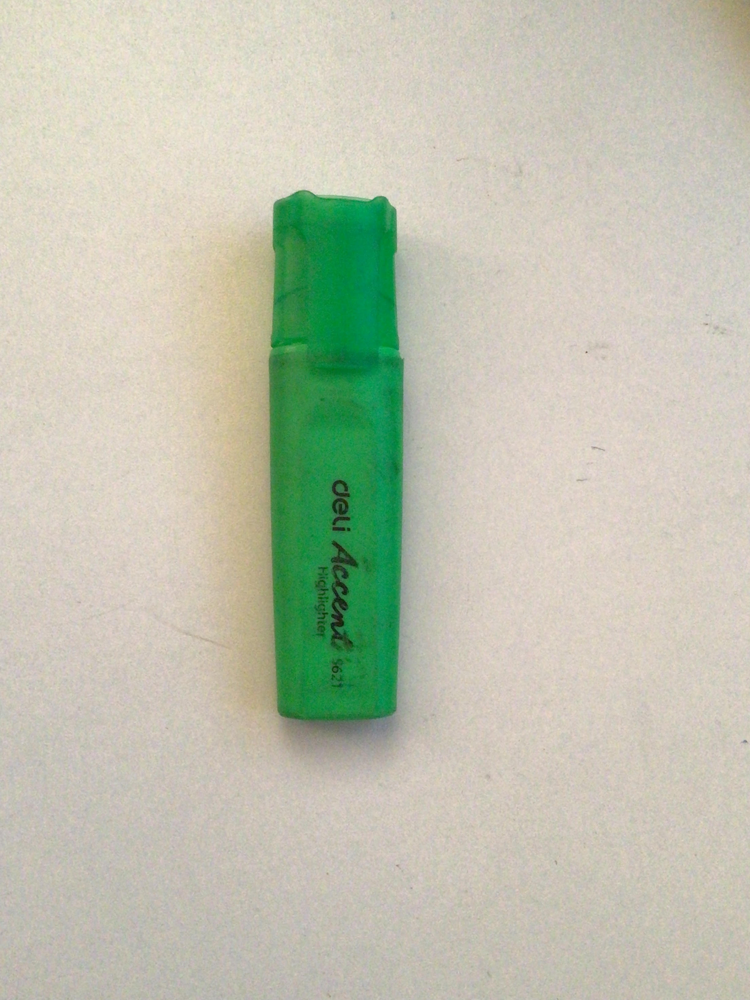

Case study between google lens and Mobilenet
GOOGLE lens
VS
Mobilenet
-
water bottle -

- marker - 
- Glasses -
- glue -
- smartphone -
- backpack -
- sharpner -
-
mouse -

- pencil case -
- dice cubes -
GOOGLE lens
VS
Mobilenet